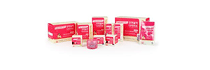
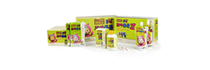

Healthcare Product & Service
Healthcare Product & Service
Food Supplements
"NatureSet", Handok's specialized brand of dietary supplements, started from the idea each individual has different nutritional needs as one's body is different from one another.
NatureSet
In order to make credible and effective products on the basis of trust, Handok created "NatureSet" based on the reliable scientific research. "NatureSet" is made only with healthy ingredients and suits different physical traits.
The development philosophy behind "NatureSet" is to assist our customers in leading healthy and active lives.
-
Natureset Q
Natureset Q series contains the 6 most needed ingredients for the health of modern day men and women. It also contains theracumin, which is a form of curcumin widh enhanced absorption of up to 28 times. Curcumin is a health ingredient which has been receiving much attention recently. Natureset Q range includes Red Ginseng Q for Relief of Fatigue which contains 6 year old red ginseng from Korea, as well as Milk Thistle Q for Liver, Siberian Ginseng Q for Comfortable Joints, DHA Q for Memory and Vitafood Q for Nutrition.
-

Natureset Freyja
Natureset Freyja gives you a range of options to choose from, depending on your lifestyle and type of diet. You can enjoy the feeling with being a health trainer. If you are sick of difficult and hungry diet, start a fun diet with Natureset Freyja. You will find yourself in a wonderful shape. Freyja is goddess of beauty. Fat Burning Diet which burns the body fat Cut and Block Diet(comes in taro and orange flavors) which inhibits transformation of carbohydrates to fat Water Diet to make your dringking water help lose weight(comes in corn tea and green tea flavors) Beauty Nutrition which keeps the nutritional balance.
-

Natureset Friend 'Hutos'
Natureset Friend 'Hutos' is a health functional food for children, produced by Handok with 58 years of history and experience. Only the best ingredients were selected in producing Hutos for the health of our children. Appearing as friendly KBS animation 'Hutos friends' on TV, children will love the product. Clearly differentiated from other existing health functional foods regarding flavor and formulation, Natureset Friend 'Hutos' is full of flavor and fun.
Hutos Joateunteun Z: Ingredients for Immune functions, such as zinc.
Hutos Multi Vitamin Mineral Chewable: A yummy chewable tablets full of multivitamins and minerals.
Medical Nutrition
In the beginning of 2013, Handok expanded business into the field of medical nutrition by forming a partnership with Nutricia, and introducing a range of products targeting pediatric to elderly consumers to enhance their recovery or improve quality of life through specific dietary management.
Advanced Medical Nutrition
Nutricia is a specialized healthcare division of the food company Danon and focuses exclusively on research of scientifically proven nutrition to meet the needs of patients and individuals for whom normal diet is insufficient or impossible.
Neocate
Neocate is a 100% amino-acid and nutritionally completes infant formula. Neocate is supported with over 80 publications and 30 years of clinical experience.
Infatrini
Infatrini is an optimal formula for catching up growth. It is a nutritionally complete and energy-dense formula, with optimal protein level for infants experiencing poor growth. Infatrini is suitable as a sole source of nutrition and contains prebiotics, DHA/AA, nucleotides and a unique fat blend that contains LCPs.
Personal Genetic Profile Analysis, GENECARE
Of the 3 billion genes, only 0.1% is for determining us
DNA holds the blueprint to how your body responds to the world around you. Because you're unique, the traditional "one-size-fits-all" approach simply doesn't work. Together, we'll uncover your personal path to a healthier lifestyle
Personalized health care services through genomic analysis
You can receive more specific and individualized healthcare services by predicting the disease through Personalized Genetic Profile Analysis Service.
Food & Beverage (High-Absorption Curcumin)
READY Q
Ready Q is the new market trend Leader in Hangover remedy. Ready Q, the delicious hangover remedy, was launched in 2014, Korea. With differentiated taste and special commercial activities, it has been ranked on top brand in Korean market. There are two kinds of products ; Drink and Chew(Gummy). Ready Q Drink, Hangover-curing drink including 50mg of yellow Curcumin. Ready Q Chew, A must-eat item before/after drinking alcohol including 30mg of yellow Curcumin. The Curcumin of Ready Q is Theracurmin®, Curcumin extracted from natural turmeric and made as small particles to be soluble and absorbed well into the body.
Ulgeum Theracurmin
Ulgeum Theracurmin is the innovative and best way to consume Theracurmin, Curcumin made as small particles to be soluble and absorbed well into the body. Ulgeum Theracurmin 30 is powder including Curcumin 30mg/g, Ulgeum Theracurmin 50 is powder including Curcumin 50mg/g. Curcumin is a bright yellow phytochemical extracted from Curcuma Longa(Tumeric)'s root belonging to East Indian ginger family. Because of its insolubility and big particles, Curcumin is hardly absorbed into the body. Theracurmin® was developed to complement this.